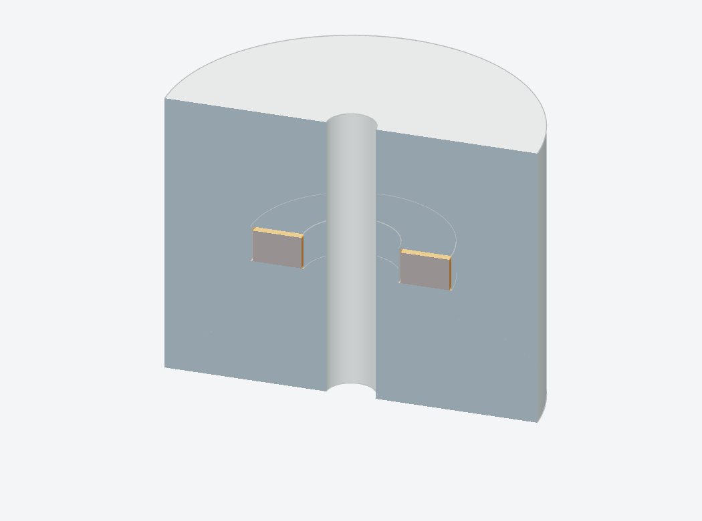
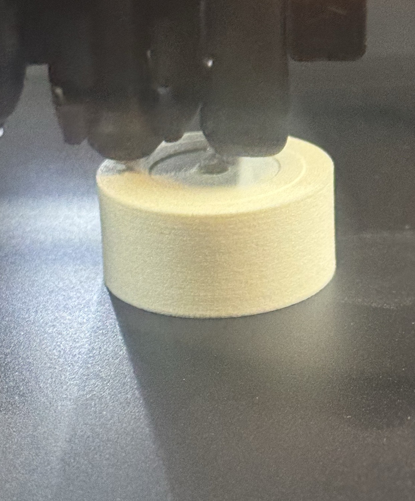

ASA AERO
Print around a magnet
Keep the float’s guide bore open and seat the ring below the pocket rims at the programmed pause.


| Nozzle | {{aero:/material_mapping/nozzle}} |
|---|---|
| Nozzle / bed / chamber | {{aero:/recipe/nozzle_c}} / {{aero:/recipe/bed_c}} / {{aero:/recipe/chamber_c}} °C |
| Flow / layers | {{aero:/recipe/flow_ratio}} / {{aero:/recipe/layer_height_mm}} mm |
| Nested wall loops | {{aero:/recipe/wall_loops}} |
| Sparse infill / skins | Off |
Review the pause and roof
Use the recipe’s dried filament and glued Engineering Plate. Check the open pocket and first covering roads in the slice. Keep the part attached while inserting, clear loose strings and resume after the ring is seated.
Keep the heat and flow settings together because they control foaming and density. The pictured trial establishes initial overprinting. Qualify lift and reed response on the finished float.
Float recipe and dry-feed procedure · Pause and covering-path review · Overprint observation · Installed reed calibration